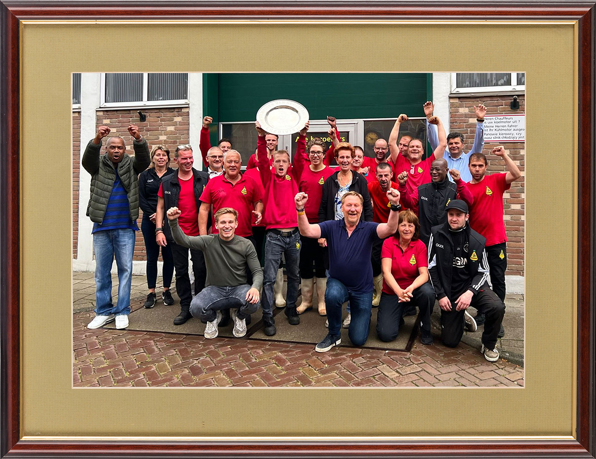
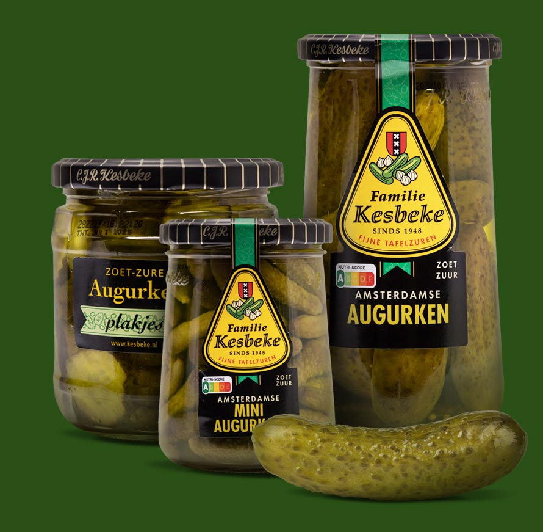
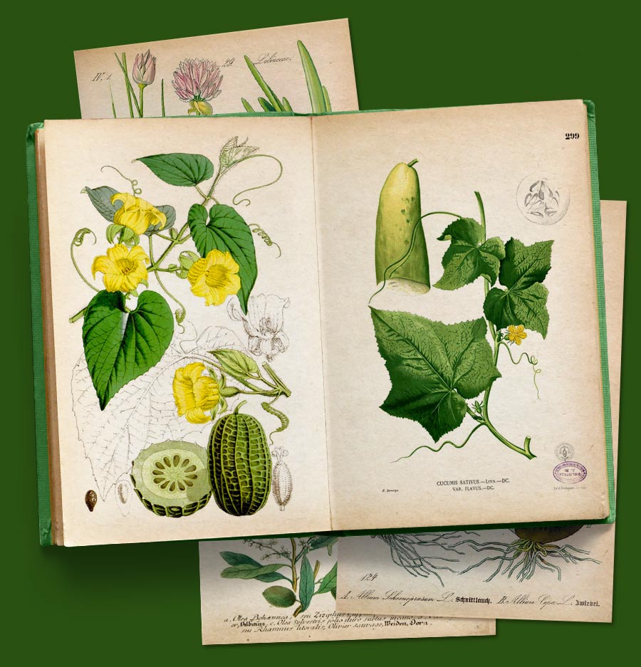
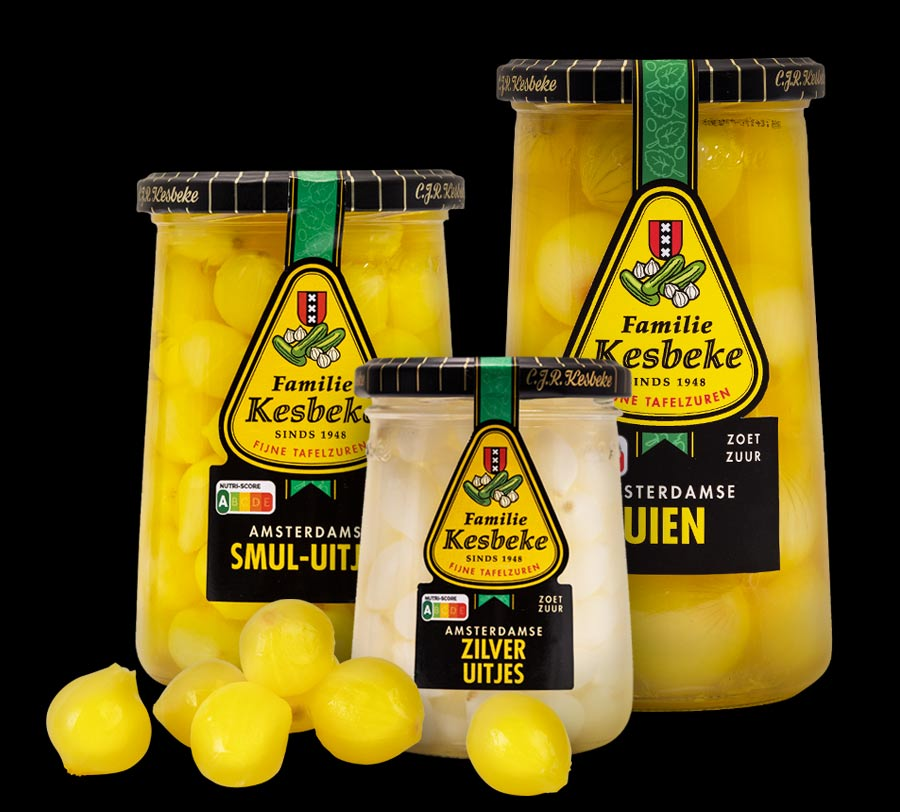
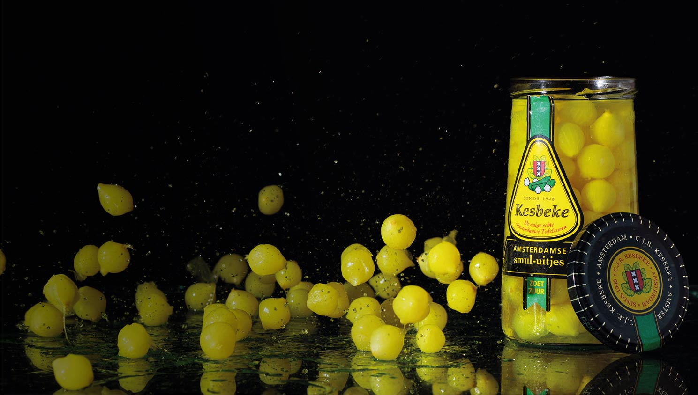
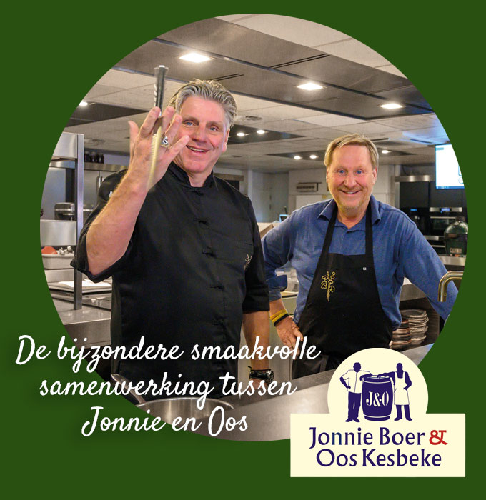
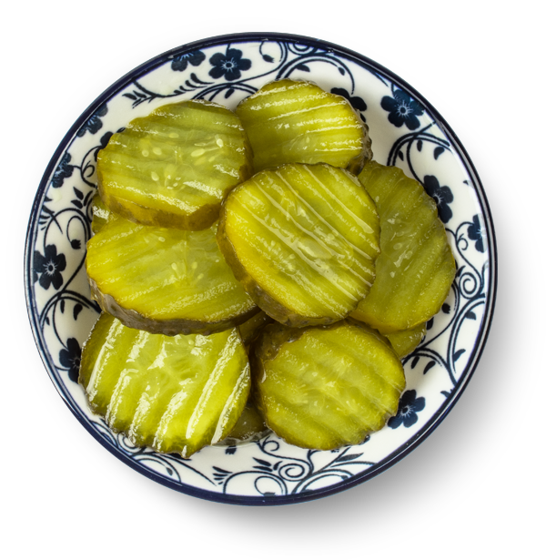
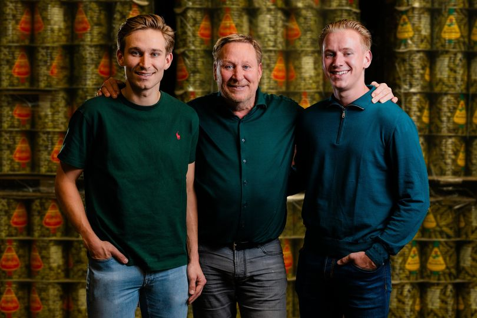
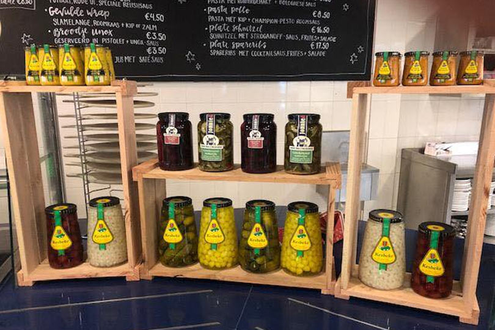

# Welkom bij Kesbeke
Wij worden vrolijk van zuur!
Bij ons wordt iedere augurk en ieder uitje met veel zorg en heel veel liefde omringd!
Kesbeke nieuws
Nominatie Augurkenkoning voor de Televizier Ring 2025
Nieuwe serie van de Augurkenkoning van start!
Het lekkerste zuur van het leukste familiebedrijf. Al zeggen we het zelf!
Vanuit een keldertje aan het Waterlooplein in Amsterdam begon Charles Kesbeke, de naamgever van ons familiebedrijf, net na de oorlog z’n inleggerij. Alles wat in ’t zuur kon, ging ook in het zuur: rolmopsen, leverworst, mosselen, haring in pekel, panharing en… augurken en uien. Zijn vrouw en drie dochters schilden de uien bij een van de dochters thuis. Op 3 hoog op het balkon, in de Jodenbreestraat. De inleggerij op het Waterlooplein groeide snel en in 1960 nam zijn zoon Camiel het bedrijf over. Daarna volgde Oos Kesbeke zijn vader op en binnenkort zijn dat Camiel en Silvian Kesbeke. En weet je wat nu het mooie is? Alles is bij Kesbeke hetzelfde gebleven! Dezelfde recepten, de gezellige familiesfeer, de Amsterdamse humor. Nou ja, er is wel wat veranderd: we hebben meer keuze dan ooit! Kijk maar wat we allemaal in ons assortiment hebben!
# Ja! Augurken
Onze Groene Jongens
Ontdek alle soorten en maten augurken. We hebben ze van klein tot bomgroot, in plakjes, blokjes, als partystick: precies waar jij ze voor nodig hebt.
Hier vind je die groene jongens achter glas!
# Augurken Ja!
Weetjes Over Augurken
Wist je dat augurken eigenlijk geen komkommers zijn? En dat ze waarschijnlijk via de Romeinen naar Europa zijn gekomen? We leggen het graag aan je uit!
Weetjes, weetjes en nog eens weetjes!
# Jammie! Uitjes, uitjes, uitjes
Amsterdamse uien en zilveruitjes
We hebben handgeschilde Amsterdamse uien en uitjes en van die mooie kleine zilveruitjes die op het land in Zeeland groeien. In heel veel verschillende potten en potjes. Kijk maar!
Hier vind je ons assortiment uien en uitjes
# Leuk! Dan weet je het ook
Weetjes over uitjes
Die kleine zilveruitjes worden eigenlijk gepest terwijl die gele Amsterdamse uien juist weer worden verwend. Als je wilt weten hoe dat zit...
Lees hier alles!
Nog meer om van te genieten
Kijk! ook allemaal kesbeke
In ons ambachtelijk bedrijf zijn we gek op alles wat in het zuur kan. Ontdek al het lekkers: kimchi, atjar, zoet-zure sauzen, worst, gerookte bietjes en nog veel meer. Lekkkrrrr!
Kijk hier maar eens, hier staan ze gezellig bij elkaar!
# Toppers maken lekkers!
Jonnie & oos
Jonnie Boer van sterrenrestaurant De Librije in Zwolle en onze eigen Oos Kesbeke zijn echte maten van elkaar. De lekkernijnen van Jonnie & Oos kun je in heel veel winkels en delicatessezaken verkrijgen. Smullen met sterren!
Lees hier meer over deze gastronomische samenwerking
# Jong geleerd is jong gedaan
Jimmie & Camiel
De nieuwe generatie dient zich overal aan. Zo ook bij Jonnie Boer en Oos Kesbeke. Jimmie, de zoon van Jonnie, is een ware meester aan het worden. ‘Onze’ Camiel bedenkt ook graag nieuwe smaak-combinaties. Oos en Jonnie zijn maten van elkaar. En hoe mooi: Zoon Camiel en zoon Jimmie zijn dat ook! Zo vader, zo zoon: binnenkort kun je ook producten van Jimmie en Camiel in de winkel verwachten!
# Rijke Familietraditie
Liefde voor het ambacht en een echt familiebedrijf, dat is kesbeke
Lees hier meer over het familiebedrijf
Hap slik weg!
Een schaaltje met augurken doet het perfect op een feestje. Lekker bij de borrel, maar je kunt er veel meer mee!
Smullen met echt ambachtelijk tafelzuur
in het nieuws
De Augurkenkoning: Nieuwe Kesbeke reality serie op RTL5
De Augurkenkoning | vanaf 12 oktober elke donderdag om 20.30 uur op RTL 5. Zo zie je het reilen en zeilen in onze augurkenfabriek!
Lees hier meer
Paviljoen bij Flevonice ook aan het tafelzuur!
Prachtige foto’s verstuurt door Chef Jan Leusink van het sfeervolle paviljoen bij Flevonice. ( Biddingshuizen) Jan serveert met zijn team de heerlijkste Hollandse hapjes na het schaatsen op de langste buitenbaan van Europa.